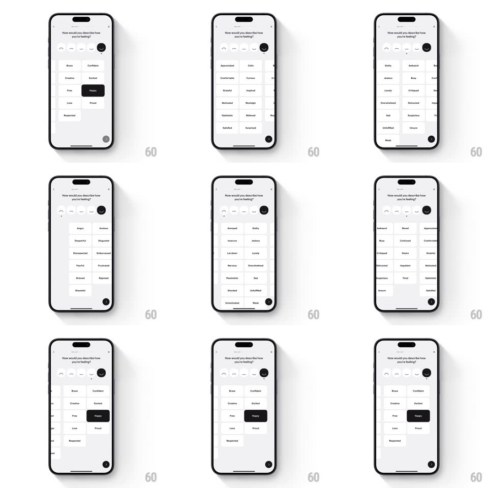

Media
Frame-by-frame

Rebuild this interaction 1:1: Stoic's feeling-descriptor flow - pick a mood face, and the two-column word grid beneath it staggers into a matching vocabulary set; tapped words fill black.

Rebuild this interaction 1:1: Stoic's feeling-descriptor flow - pick a mood face, and the two-column word grid beneath it staggers into a matching vocabulary set; tapped words fill black. ## Integration Integration: stack-agnostic spec - springs given as stiffness/damping, timed motions as duration + curve; map every value to your framework and animation library of choice. ## Scene A light sheet asking "How would you describe how you're feeling?" Top: a row of five minimal mood faces (arc mouths from sad to smiling) - the selected one is a large solid black circle, the rest thin outline strokes. Below: a 2-column grid of rounded word pills (Brave, Confident, Creative, Excited, Free, Happy, Love, Proud, Respected for the brightest face; darker sets like Angry, Anxious, Fearful for the sad ones). A black circular FAB floats bottom-right. ## Motion spec Pattern: face-morphing vocabulary grid. - Tap a face: the tapped face's outline fills into the big black disc (scale 0.7 to 1, spring ~380/20) while the previous disc deflates back to an outline (reverse, 250ms); a soft haptic lands with the fill. - The word grid transitions as a staggered wipe: old pills fade and shrink (scale to 0.92, 150ms, cascading top-left to bottom-right at 25ms steps), then the new set staggers in (fade + translateY 8px, 200ms, same cascade). - Tap a word: the pill fills black with white text (background + color, 150ms) and pops (scale 1 to 1.06 to 1, spring ~440/22); tapping again deselects with the reverse. - Multiple words can be selected; each selection pulses the FAB (scale 1.05, 120ms) to signal readiness. - The sheet itself entered with a bottom-slide spring (~360/28) over a dimmed backdrop. ## Calibration - The face row and grid must stay visually linked: grid transition starts the same frame the face fill starts. - Word pills are white with hairline borders; only selection turns them black - no other accent color exists. ## Reduced motion Grid crossfades; selection is an instant fill. ## Don't miss - The mood faces are pure arcs and dots (no full emoji faces) - keep the line-art restraint. - Word sets get darker in vocabulary as you move left through the faces; the grid content IS the mood scale.